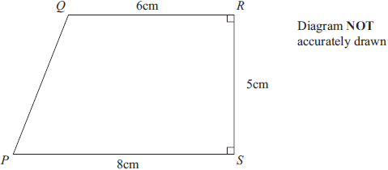
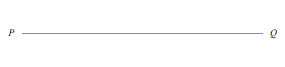
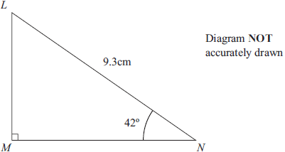
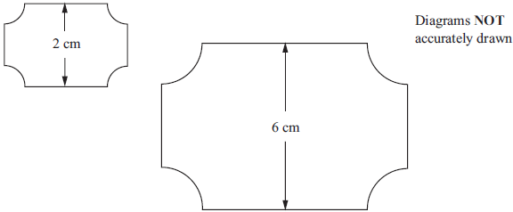
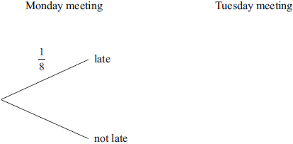

1
In a sale, normal prices are reduced by 15%.
The normal price of a television was $640
Work out the sale price of the television.
(3)
2
John throws a biased coin 120 times.
It shows heads 90 times.
(a)
John throws the coin once more.
Work out an estimate for the probability that the coin shows tails.
(2)
Carly throws the same coin 200 times.
(b)
Work out an estimate for the number of times the coin shows tails.
(2)
3
Here is a list of ingredients for making Apple and Raspberry Crumble for 6 people.
Apple and Raspberry Crumble
Ingredients for 6 people
120 grams
230 grams
200 grams
160 grams
90 grams
plain flour
apples
raspberries
soft brown sugar
butter
Sam wants to make Apple and Raspberry Crumble for 15 people.
She has enough plain flour, soft brown sugar and butter.
Work out the amount of apples and the amount of raspberries Sam needs.
(3)
4
The length of Rachael’s journey from her home to work is 72 km.
The journey takes 1 hour 20 minutes.
Work out her average speed in km/h.
(3)
(i)
\( a \times a \times a \times a \),
(1)
(ii)
\( 5a \times 6b \),
(1)
(iii)
\( q^8 \div q^2 \).
(1)
(b)
Solve \( 5 − 2y = 12 \)
(2)
(c)
\( v = w^2 − 2w \).
Work out the value of \( v \) when \( w = 6 \)
(2)
6
The diagram shows a trapezium PQRS.

(a)
Calculate the area of the trapezium PQRS.
(2)
(b)
Calculate the length PQ.
Give your answer correct to 3 significant figures.
(4)
7
Six numbers have a mean of 5
Five of the numbers are
\[ 3 \qquad 2 \qquad 7 \qquad 6 \qquad 2 \]
The other number is \( x \).
Work out the value of \( x \).
(3)
8
Use compasses and a ruler only to construct the perpendicular bisector of the line
PQ.
You must show all construction lines.
printable full-sized diagram

(2)
9
The length of a fence is 137 metres, correct to the nearest metre.
Write down
(i)
the lower bound for the length of the fence,
(1)
(ii)
the upper bound for the length of the fence.
(1)
10
Express 126 as a product of its prime factors.
(3)
11

Calculate the length of LM.
Give your answer correct to 3 significant figures.
(3)
12
(i)
Solve the inequality \( 2x + 13 \leq 6 \)
(2)
(ii)
\( n \) is a negative integer.
Write down all the values of \( n \) which satisfy \( 2n + 13 \leq 6 \)
(2)
13
The table gives the diameters, in metres, of four planets.
| Planet |
Diameter (metres) |
| Mercury |
\( 4.88 \times 10^6 \) |
| Venus |
\( 1.21 \times 10^7 \) |
| Earth |
\( 1.28 \times 10^7 \) |
| Mars |
\( 6.79 \times 10^6 \) |
(a)
Which planet has the largest diameter?
(1)
(b)
Write \( 6.79 \times 10^6 \) as an ordinary number.
(1)
(c)
Calculate the difference, in metres, between the diameter of Venus and the diameter of Mercury.
Give your answer in standard form.
(2)
14
Here are two supermarket price tickets.

The two supermarket price tickets are mathematically similar.
The area of the smaller ticket is 7 cm2.
Calculate the area of the larger ticket.
(2)
15
(a)
Simplify \(\displaystyle \quad \frac{8(x-3)^2}{4(x-3)} \)
(2)
(b)
Factorise \(\quad a^2-144 \)
(2)
(c)
Make \( q \) the subject of the formula \(\quad p = \sqrt{q} - 5r \)
(2)
(d)
Solve \(\displaystyle \quad \frac{4}{y-4} = 5 \)
(3)
(i)
Use the histogram to complete the table.
(2)
(ii)
Use the table to complete the histogram.
(2)
17
Alan has to attend a meeting on Monday and on Tuesday.
The probability that he is late for a meeting is \(\displaystyle \frac{1}{8}\)
(a)
Complete the probability tree diagram.

(3)
(b)
Calculate the probability that Alan is late for at least one of these meetings.
(3)
(a)
(3)
Monday meeting Tuesday meeting
1
8
late
not late
(b)
..............................................................
(3)
(Total for Question 17 is 6 marks)
Do NOT write in this space
16 *P38577A01624*
18 Show that the recurring decimal 0 396
44
111
. =
(Total for Question 18 is 2 marks)
19 The diagram shows triangle ABC.
A
10.2cm
Diagram NOT
accurately drawn
134º
28º
B
C
Angle BCA = 28°
Angle CAB = 134°
BC =10.2 cm.
Calculate the length of AB.
Give your answer correct to 3 significant figures.
........................................................ cm
(Total for Question 19 is 3 marks)
• •
Diagram NOT
accurately drawn
17 *P38577A01724* Turn over
20 f(x) =
2
x
g(x) = x
x
+1
(a) State which value of x cannot be included in the domain of f or g.
..............................................................
(1)
(b) Solve gf(a) = 3
a = ..............................................................
(3)
(c) Express the inverse function g–1 in the form g–1(x)
g–1(x) = ..............................................................
(3)
(Total for Question 20 is 7 marks)
18 *P38577A01824*
21 Clare buys some shares for $50x.
Later, she sells the shares for $(600 + 5x).
She makes a profit of x%
(a) Show that x2 + 90x − 1200 = 0
(3)
(b) Solve x2 + 90x − 1200 = 0
Find the value of x correct to 3 significant figures.
x = ..............................................................
(3)
(Total for Question 21 is 6 marks)
19 *P38577A01924* Turn over
22
A
B
C
G
H
F
E
D
7cm
5cm
3cm
Diagram NOT
accurately drawn
The diagram shows a cuboid ABCDEFGH.
AB = 5cm
BC = 7cm
AE = 3cm
(a) Calculate the length of AG.
Give your answer correct to 3 significant figures.
.............................................................. cm
(3)
(b) Calculate the size of the angle between AG and the plane ABCD.
Give your answer correct to 1 decimal place.
..............................................................
(2)
(Total for Question 22 is 5 marks)
20 *P38577A02024*
23 Express 48 + 108 in the form k 6 where k is a surd.
..............................................................
(Total for Question 23 is 3 marks)
Do NOT write in this space
21 *P38577A02124*
24
R
P S
Q
a
b Diagram NOT
accurately drawn
The diagram shows a trapezium PQRS.
PS is parallel to QR.
PS = 4QR.
PQ = a QR = b
(a) Find, in terms of a and/or b,
(i) PS
..............................................................
(ii) PR
..............................................................
(iii) RS.
..............................................................
(3)
The point T lies on the line PR such that PT : TR = 4 : 1
(b) Given that TS = k QT, find the value of k.
k = ..............................................................
(3)
(Total for Question 24 is 6 marks)